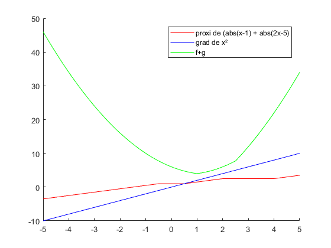
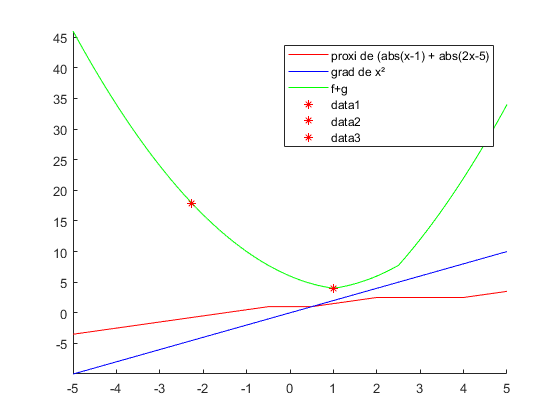

Contents
clear all; close all;
parametres
pas=0.0001;
seuil=0.000001;
x_ini=-2.26;
gamma=0.5;
calcul de prox
x_min=-5;pas_x=0.01;x_max=5;
x=x_min:pas_x:x_max;
f=abs(x-1)+abs(2*x-5);
g=x.*x;
hold on
f1=@(x1) abs(x1-1) + abs(2*x1-5);
g1=@(x1) x1*x1;
proxf=@(x2)(x2+3*gamma).*(x2+3*gamma<1)+(x2+gamma).*((x2+gamma)>1).*((x2+gamma)<5/2)+(x2-3*gamma).*(x2-3*gamma>5/2)+1.*(x2>=1-3*gamma).*(x2<=1-gamma)+(5/2).*(x2<=(5/2)+3*gamma).*(x2>=(5/2)-gamma);
gradg=gradient(g,x);
proxi=zeros(1,length(x));
for i=1:length(x)
proxi(i)=proxf(x(i));
end
hold on
plot(x,proxi,'r')
plot(x,gradg,'b')
plot(x,f+g,'g')
legend('proxi de (abs(x-1) + abs(2x-5)','grad de x²','f+g')

algorithme du point proximal
plot(x_ini,(f1(x_ini)+g1(x_ini)),'r*')
x_k=x_ini;
n=1;
diff=1;
while(abs(diff(n))>seuil)
x_k2=proxf(x_k(n)-(gamma*(gradg(round(length(x)/(x_max-x_min)*x_k(n)+(length(x)-1)/2)))));
x_k=[x_k,x_k2];
diff2=x_k2-x_k(n);
diff=[diff,diff2];
hold on
plot(x_k2,(f1(x_k2)+g1(x_k2)),'r*')
n=n+1;
end
axis([x_min x_max -inf inf])
